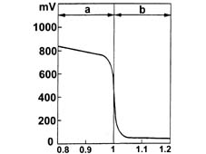
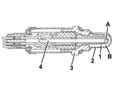
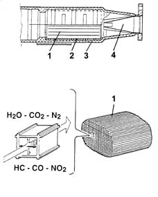
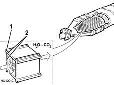
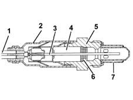
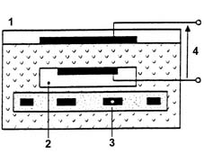

1080B exhaust emission control system
- Path
- Descriptions > 10 ENGINE UNIT > 1080 EXHAUST EMISSION CONTROL SYSTEM > 1080B exhaust emission control system
- Kind
- system description
- Applies to
- all engines; all production periods
- Interactive page
- https://sloeber94.github.io/elrnDB-fMltpl/en/#/2888232
Applies to: engines: 1.6 16v; all production periods
LAMBDA SENSOR
Specifications
It is mounted on the front section of the exhaust pipe, and it informs the control unit about the combustion trend (stoichiometric ratio).
The electronic control unit identifies the composition of the mixture (rich or lean) from the Lambda sensor output voltage.
It adjusts the quantity of fuel injected to ensure the optimum composition of the mixture (l = 1) to create the ideal conditions for the treatment of the exhaust gases in the catalytic converter.
If the mixture is too rich (l < 1), then the quantity of fuel should be reduced and, if the mixture is too lean (l > 1), then the quantity of fuel should be increased.

a, Rich mixture (too little air) b, Weak mixture (too much air)
The Lambda sensor, placed in contact with the exhaust gases, generates an electrical signal whose voltage depends on the concentration of oxygen present in the gases.
This voltage is characterized by a sudden change when the composition of the mixture moves away from Lambda = 1.
Composition
The sensitive part of the sensor consists of a ceramic casing (1), with a zirconium dioxide base, covered in a layer of platinum, closed at one end, inserted in a protective pipe (2) and housed in a metal casing (3).
The outer part (b) of the ceramic casing is exposed to the current of exhaust gases, whilst the inner part (a) is in contact with the ambient air.
The operation of the sensor is based on the fact that, at temperatures above 300°C, the ceramic material becomes a conductor of oxygen ions. As a result, according to the percentage difference in the quantity of oxygen at the sides (a, b) of the ceramic casing, a tension is produced between the two edges which is an indication of the difference in oxygen between the two environments.
When the sensor provides a low voltage level (below 200 mV), the control unit recognizes that the mixture istrength is lean (Lambda > 1) and increases the quantity of fuel injected. When the sensor provides a high voltage level (above 800 mV), the control unit recognizes that the mixture is rich (Lambda < 1) and decreases the quantity of fuel injected. The Lambda sensor varies the injection times so that the engine is operating with a Lambda coefficient continuously oscillating between around 0.980 and 1.020.
The Lambda sensor is operational at when the temperature of the ceramic casing is 300°C; at lower temperatures the signal is not reliable and the injection control unit does not carry out the adjustment in closed-loop until the sensor warms up.
To ensure that the operating temperature is reached rapidly, the sensor is fitted with an internal heating resistance supplied by a special relay.

a, Electrode (+) in contact with the outside air b, Electrode (-) in contact with the exhaust gases 1, Ceramic body 2, Protective tube 3, Metal body 4, Electrical resistor
Electrical specifications:
Heater supply: 12 V
Heating resistance: 43 - 4.7 ohm.
CATAYTLIC CONVERTER
The three-way catalytic converter simultaneously reduces the three polluting gases present in the exhaust gases:
- unburnt hydrocarbons (HC);
- carbon monoxide (CO);
- nitrogen oxides (NOx).
Two types of chemical reactions take place in the converter:
- oxidation of the CO and HC, converted into carbon dioxide (CO2) and water (H2O)
- reduction of the NOx converted into nitrogen (N2).
The converter consists of a monolith, a metal mesh support for damping impacts and vibrations and an outer stainless steel housing resistent to high temperatures and atmospheric agents.
The monolith consists of a honeycomb structure comprising a ceramic material coated with a very thin layer of catalytically active substances, platinum or rodium. These accelerate the chemical decomposition of the harmful substances contained in the exhaust gases which, passing through the core cells at temperatures of over 300°-350°C, activate the catalyzers, thus starting the oxidoreduction reactions.
To optimze the efficiency and duration of the catalyzer, a perforated plate metal cone improves the diffusion of the exhaust gases in the cells of the ceramic core.

1, Ceramic monolith 2, Metal support 3, Outer casing 4, Perforated plate metal cone
Applies to: engines: 1.9 JTD 8V; all production periods
CATAYTLIC CONVERTER
The oxidizing catalyzer is a post-treatment device for oxidizing the CO, HC and particle matter, transforming them into carbon dioxide (CO2) and water vapour (H2O).
The catalytic converter consists of a ceramic, honeycomb structure monolith (1) with cells impregnated with platinum (2), which acts as a catalyst for the oxidation process.
The exhaust gases which pass through the cells heat the catalyzer, triggering the conversion of the pollutants into inert compounds.
The chemical reaction which causes the oxidation of the CO, HC, and particle matter takes place at temperatures of between 200 and 350°C.
In effect, at temperatures above 350°C the sulphur, contained in the diesel fuel, starts to oxidize, producing sulphur dioxide and sulphuric anhydride.

Applies to: engines: 1.6 16v; all production periods; only with equipment: BIPOWER and BLUPOWER
LAMBDA SENSOR
This sensor measures the oxygen content in the exhaust gases.
The sensor output signal is sent to the electronic control unit for the adjustment of the air/petrol mixture in order to keep the stoichiometric ratio as close as possible to the theoretical value.
To obtain an optimum mixture the quantity off fuel njected must be a close as possible to the theoretical quantity required to be completely burnt in relation to the amount of air drawn in by the engnie.
In this situation the Lambda factor is equal to 1.
λ=1, ideal mixture. The CO is within the legal limits
λ≥1, lean mixture Excess air; the CO values tend to be low
λ≤1, rich mixture. Lack of air; the CO values tend to be high.
The sensor is fitted upstream of the catalyzer.
Heater supply: 12V
Heater resistance: 4.3 - 4.7 ohm.
COMPOSITION
The sensitive part of the sensor consists of a ceramic casing (1), with a zirconium dioxide base, covered in a layer of platinum, closed at one end, inserted in a protective pipe (2) and housed in a metal casing (3).
The outer part (b) of the ceramic casing is exposed to the current of exhaust gases, whilst the inner part (a) is in contact with the ambient air.
a, Electrode (+) in contact with the outside air b, Electrode (-) in contact with the exhaust gases 1, Ceramic body 2, Protective tube 3, Metal body 4, Electrical resistor
Applies to: engines: 1.6 16v; all production periods; only with equipment: Euro 3 and BIPOWER
Lambda probe
Construction features
The lambda probes are planar type. One is fitted immediately after the exhaust manifold but before the catalytic converter ('PRE'), while the second is fitted immediately after the catalytic converter ('POST').
Both lambda probes supply the engine control unit with information on combustion progress; the pre catalytic converter probe analyses the stochiometric ratio while the post catalytic converter probe monitors catalytic converter operation and reports back to the engine control unit, which fine-tunes the stoichiometric ratio.
To obtain an optimum mixture, the quantity of air drawn in by the engine is the same as the theoretical quantity that would be needed to burn all the injected fuel.
Therefore the Lambda factor () is the ratio between the quantity of air drawn in and the theoretical quantity of air and the ideal value is 1.
Thus:
- = 1 ideal mixture
- 1 lean mixture
- 1 rich mixture
a, Rich mixture (lack of air) b, Weak mixture (too much air)
Components and operation
When brought into contact with exhaust gases, the Lambda probe generates an electrical signal whose voltage depends on the concentration of oxygen present in the gases.
Even though the lambda probes are the same, they work under different gas conditions and send the engine control unit a different signal; the signal from the pre catalytic converter probe is computed to correct the mixture concentration by the amount by which it deviates from ( 1.
At the same time the post-sensor checks how much the catalyzer lowers the harmful exhaust gases and informs the control unit if these gases are more or less pollutant and the control unit ensures the optimum Lambda value = 1 using this parameter.
To prevent the ceramic case experiencing thermal shock due to condensation formation when the engine is cold, the engine control unit heats the pre and post catalytic converter lambda probes to bring their temperature to that of the exhaust gases.
The heater and measuring chamber are built into the 'planar' (laminated) ceramic element to promote fast chamber heating and thus allow a closed loop check within a short time of engine start-up.

1, Connecting element 2, Protective sleeve 3, Planar sensor element 4, Ceramic tube casing 5, Probe seating 6, Ceramic seal 7, Protective tube
Lambda sensor operation is based on the principle of an oxygen concentration chamber with solid electrolyte.
The surfaces of the measuring chamber are coated with microporous layers of noble material.

1, Exhaust gases 2, Passage of reference air 3, Heater 4, Reference voltage
Electical properties
- Heater power supply. 12V
- Heater coil 0.5 1 k
EXHAUST EMISSION CONTROL SYSTEM
Construction features
The emission control system includes devices designed to keep down the level of harmful emissions in the atmosphere.
- exhaust emissions
- vapour/gas emission from the crankcase
Catalytic converter
Construction features and composition
The catalytic converter is used to reduce emissions of the three main pollutants:
- HYDROCARBONS = HC
- NITROGEN OXIDES = NoX
- CARBON MONOXIDE = CO
Briefly, the catalytic converter consists of a metal mount coated in a substrate. This in turn contains chemically active material that triggers and facilitates two chemical reactions , i.e. oxidation to reduce CO and HC and reduction to reduce NoX.
The active elements are generally made out of noble materials. RHODIUM and PALLADIUM are used for the reduction reactions, while PLATINUM is used for oxidation.
The substrate also contains other chemical compounts that serve the fundamental purpose of storing and releasing oxygen required to carry out chemical reactions.
This feature of catalytic converters is known as OXYGEN STORAGE.
Operation
The substrate of the new oxygen store catalytic converter contains chemical compounds that store and release the oxygen required for chemical reactions.
Oxygen storage takes place when the mixture is lean. The oxygen required for oxidation is released when the mixture is rich.
This function is typical of oxygen store catalytic converters.
An old or detiorated catalyzer is less efficient at carrying out the chemical reactions with a consequent increase in pollutant emissions; the new OXYGEN STORAGE catalyzer works efficiently and the post-sensor catalyzer supplies an almost constant output voltage since the catalyzer uses all the oxygen for its chemical reactions.
As the catalytic converter ages, the OXYGEN STORAGE effect drops gradually and the post catalytic converter probe uses less and less oxygen. Output voltage continues to increase but the frequency is the same as that of the post catalytic converter probe.
Applies to: engines: 1.6 16v; all production periods; only with equipment: BIPOWER and BLUPOWER
The operation of the sensor is based on the fact that, at temperatures above 300°C, the ceramic material becomes a conductor of oxygen ions. As a result, according to the percentage difference in the quantity of oxygen at the sides (a, b) of the ceramic casing, a tension is produced between the two edges which is an indication of the difference in oxygen between the two environments.
When the sensor provides a low voltage level (below 200 mV), the control unit recognizes that the mixture istrength is lean (Lambda > 1) and increases the quantity of fuel injected. When the sensor provides a high voltage level (above 800 mV), the control unit recognizes that the mixture is rich (Lambda < 1) and decreases the quantity of fuel injected.
The Lambda sensor varies the injection times so that the engine is operating with a Lambda coefficient continuously oscillating between around 0.980 and 1.020.
The Lambda sensor is operational at when the temperature of the ceramic casing is 300°C; at lower temperatures the signal is not reliable and the injection control unit does not carry out the adjustment in closed-loop until the sensor warms up.
To ensure that the operating temperature is reached rapidly, the sensor is fitted with an internal heating resistance supplied by a special relay.
EXHAUST EMISSION CONTROL SYSTEM
Construction features
The emission control system includes devices designed to keep down the level of harmful emissions in the atmosphere.
- exhaust emissions
- vapour/gas emission from the crankcase
CATALYTIC CONVERTER
Construction specifications
The three-way catalytic converter simultaneously reduces the three polluting gases present in the exhaust gases:
- unburnt hydrocarbons (HC);
- carbon monoxide (CO);
- nitrogen oxides (NOx).
Two types of chemical reactions take place in the converter:
- oxidation of the CO and HC, converted into carbon dioxide (CO2) and water (H2O)
- reduction of the NOx converted into nitrogen (N2).
Composition
The converter consists of a monolith, a metal mesh support for damping impacts and vibrations and an outer stainless steel housing resistent to high temperatures and atmospheric agents.
The monolith consists of a honeycomb structure comprising a ceramic material coated with a very thin layer of catalytically active substances, platinum or rodium. These accelerate the chemical decomposition of the harmful substances contained in the exhaust gases which, passing through the core cells at temperatures of over 300°-350°C, activate the catalyzers, thus starting the oxidoreduction reactions.
To optimze the efficiency and duration of the catalyzer, a perforated plate metal cone improves the diffusion of the exhaust gases in the cells of the ceramic core.
1, Ceramic monolith 2, Metal support 3, Outer casing 4, Perforated plate metal cone
Applies to: engines: 1.6 16v; all production periods; only with equipment: BIPOWER
Applies to: engines: 1.6 16v; all production periods; only with equipment: GPOWER
CONSTRUCTION FEATURES
LAMBDA PROBES
Construction features
The lambda probes are planar type. One is fitted immediately after the exhaust manifold but before the catalytic converter ('PRE'), while the second is fitted immediately after the catalytic converter ('POST').
Both lambda probes supply the engine control unit with information on combustion progress; the pre catalytic converter probe analyses the stochiometric ratio while the post catalytic converter probe monitors catalytic converter operation and reports back to the engine control unit, which fine-tunes the stoichiometric ratio.
To obtain an optimum mixture, the quantity of air drawn in by the engine is the same as the theoretical quantity that would be needed to burn all the injected fuel.
Lambda factor (λ) is the ratio between the quantity of air drawn in and the theoretical quantity of air and the ideal value is 1.
Thus:
- λ = 1 ideal mixture
- λ > 1 lean mixture
- λ < 1 rich mixture
a, Rich mixture (lack of air) b, Weak mixture (too much air)
Components and operation
When brought into contact with exhaust gases, the Lambda probe generates an electrical signal whose voltage depends on the concentration of oxygen present in the gases.
Even though the lambda probes are the same, they work under different gas conditions and send the engine control unit a different signal; the signal from the pre catalytic converter probe is computed to correct the mixture concentration by the amount by which it deviates from λ ( 1.
At the same time the post-sensor checks how much the catalyzer lowers the harmful exhaust gases and informs the control unit if these gases are more or less pollutant and the control unit ensures the optimum Lambda value = 1 using this parameter.
To prevent the ceramic case experiencing thermal shock due to condensation formation when the engine is cold, the engine control unit heats the pre and post catalytic converter lambda probes to bring their temperature ≈ to that of the exhaust gases.
The heater and measuring chamber are built into the 'planar' (laminated) ceramic element to promote fast chamber heating and thus allow a closed loop check within a short time of engine start-up.
1, Connecting element 2, Protective sleeve 3, Planar sensor element 4, Ceramic tube casing 5, Probe seating 6, Ceramic seal 7, Protective tube
Lambda sensor operation is based on the principle of an oxygen concentration chamber with solid electrolyte.
The surfaces of the measuring chamber are coated with microporous layers of noble material.
1, Exhaust gases 2, Passage of reference air 3, Heater 4, Reference voltage
Electical properties
- Heater power supply. 12V
- Heater coil 0.5 - 1 kO
EXHAUST EMISSION CONTROL SYSTEM
Construction features
The emission control system includes devices designed to keep down the level of harmful emissions in the atmosphere.
- exhaust emissions
- vapour/gas emission from the crankcase
CATAYTLIC CONVERTER
Construction features and composition
The catalytic converter is used to reduce emissions of the three main pollutants:
- HYDROCARBONS = HC
- NITROGEN OXIDES = NoX
- CARBON MONOXIDE = CO
Briefly, the catalytic converter consists of a metal mount coated in a substrate. This in turn contains chemically active material that triggers and facilitates two chemical reactions , i.e. oxidation to reduce CO and HC and reduction to reduce NoX.
The active elements are generally made out of noble materials. RHODIUM and PALLADIUM are used for the reduction reactions, while PLATINUM is used for oxidation.
The substrate also contains other chemical compounts that serve the fundamental purpose of storing and releasing oxygen required to carry out chemical reactions.
This feature of catalytic converters is known as OXYGEN STORAGE.
Operation
The substrate of the new oxygen store catalytic converter contains chemical compounds that store and release the oxygen required for chemical reactions.
Oxygen storage takes place when the mixture is lean. The oxygen required for oxidation is released when the mixture is rich.
This function is typical of oxygen store catalytic converters.
An old or detiorated catalyzer is less efficient at carrying out the chemical reactions with a consequent increase in pollutant emissions; the new OXYGEN STORAGE catalyzer works efficiently and the post-sensor catalyzer supplies an almost constant output voltage since the catalyzer uses all the oxygen for its chemical reactions.
As the catalytic converter ages, the OXYGEN STORAGE effect drops gradually and the post catalytic converter probe uses less and less oxygen. Output voltage continues to increase but the frequency is the same as that of the post catalytic converter probe.